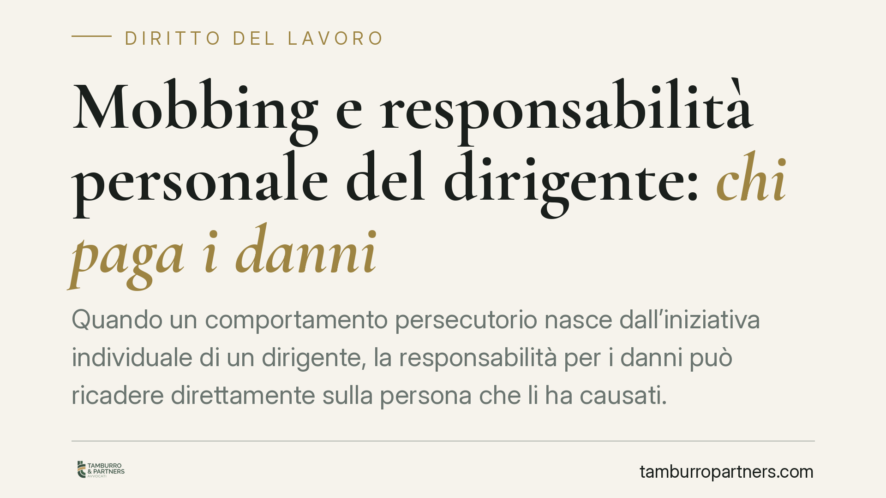

Mobbing e responsabilità personale del dirigente: chi paga i danni
Quando un comportamento persecutorio nasce dall'iniziativa individuale di un dirigente, la responsabilità per i danni può ricadere direttamente sulla persona che li ha causati. Una recente pronuncia della Corte di Cassazione, sezione lavoro, torna sulla distinzione tra condotta del singolo e scelta organizzativa dell'impresa: una linea di confine che incide su chi risarcisce e a quali condizioni.

Il fatto
Un dipendente lamenta di aver subito una condotta persecutoria protratta nel tempo da parte di un dirigente. La questione centrale non riguarda solo l'esistenza del danno, ma l'individuazione del soggetto tenuto a risarcirlo: il dirigente in prima persona, l'ente datore di lavoro, o entrambi.
La risposta dipende dalla natura della condotta. Se il comportamento vessatorio è frutto di un'iniziativa individuale, mossa da intento persecutorio personale, la responsabilità può gravare direttamente sul dirigente. Se invece si traduce in una scelta organizzativa riferibile all'impresa, il quadro cambia.
Inquadramento normativo
Il riferimento resta l'art. 2087 del codice civile, che impone al datore di lavoro di adottare le misure necessarie a tutelare l'integrità fisica e la personalità morale dei lavoratori. È la base dell'obbligo di protezione contro condotte come il mobbing e lo straining.
È importante precisare la natura di questa responsabilità: quella del datore ex art. 2087 c.c. è responsabilità contrattuale. Il datore, per andare esente, deve provare in modo rigoroso di aver adempiuto all'obbligo di sicurezza, adottando e facendo rispettare misure adeguate di prevenzione e vigilanza. L'esonero non è automatico: non basta l'esistenza formale di procedure, occorre dimostrarne l'effettiva attuazione.
Accanto a questo, il dirigente che agisca con dolo o colpa, ponendo in essere una condotta illecita a titolo individuale, può rispondere in via extracontrattuale (art. 2043 c.c.) verso il dipendente danneggiato. Le due responsabilità non si escludono necessariamente: possono concorrere.
Quanto allo straining, si tratta di una nozione elaborata dalla giurisprudenza e non codificata: la Cassazione lo ha ricondotto a una forma attenuata di condotta ostile, caratterizzata da azioni che, pur non presentando la sistematicità richiesta per il mobbing, producono sul lavoratore un effetto negativo duraturo. Trattandosi di elaborazione pretoria, i suoi contorni vanno verificati caso per caso.
Implicazioni pratiche
Il principio incide in modo diverso su tre destinatari.
Per il dirigente. Non è al riparo dietro lo schermo dell'organizzazione. Se la condotta persecutoria è espressione di una scelta personale, il patrimonio individuale può essere direttamente esposto all'azione risarcitoria del lavoratore.
Per il datore di lavoro. La difesa non consiste nell'invocare l'iniziativa del singolo, ma nel dimostrare di aver vigilato in concreto. La distinzione tra iniziativa individuale del dirigente e scelta organizzativa dell'impresa diventa il punto decisivo: dove l'impresa ha tollerato o avallato la condotta, l'esonero è difficile da sostenere.
Per il dipendente. L'azione risarcitoria può essere indirizzata verso più soggetti, ma richiede la ricostruzione precisa dei fatti: chi ha agito, con quale intento, in quale contesto organizzativo.
Cosa fare in concreto
- Documentare gli episodi. Annotare date, luoghi, contenuti e persone presenti. Una cronologia ordinata è più utile di un ricordo generico.
- Conservare le comunicazioni. E-mail, messaggi, ordini di servizio e note interne possono chiarire se la condotta sia riconducibile a un singolo o all'organizzazione.
- Acquisire certificazione medica. Il danno alla salute va provato: referti, diagnosi e relazioni specialistiche costituiscono elementi centrali.
- Ricostruire la catena decisionale. Individuare chi ha assunto le decisioni contestate aiuta a distinguere responsabilità individuale e organizzativa.
- Valutare la posizione prima di agire. È opportuno un esame preliminare del caso, per verificare presupposti, soggetti legittimati e termini, prima di intraprendere qualsiasi iniziativa.
La distinzione tra la condotta del singolo e la responsabilità dell'impresa non è un tecnicismo: determina verso chi si dirige la domanda risarcitoria e quali prove occorre raccogliere. Per questo la fase di ricostruzione dei fatti è, in materia di mobbing e straining, quella su cui si gioca l'esito.
---
Contributo informativo a cura di Tamburro & Partners Avvocati. Non costituisce parere legale.
Ogni storia di lavoro ha i suoi tempi.
Se gestisci HR e vuoi un confronto su contenzioso, ispezioni o licenziamenti, scrivi allo studio. Ti rispondiamo entro un giorno lavorativo.